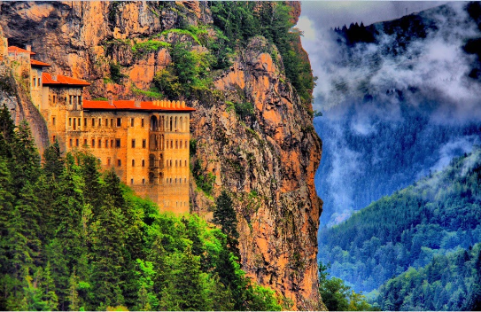
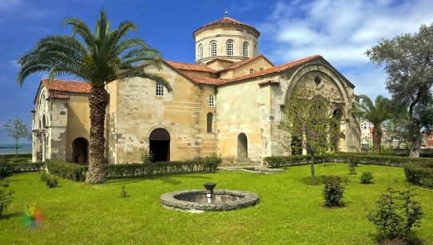
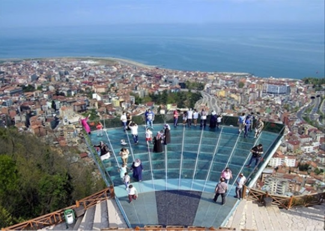
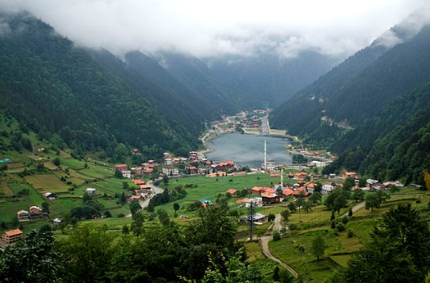
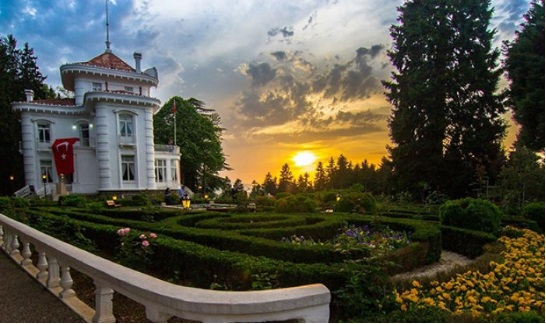
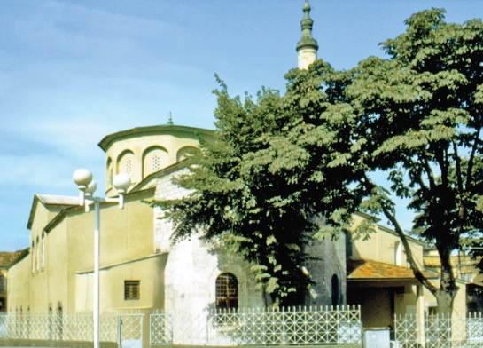
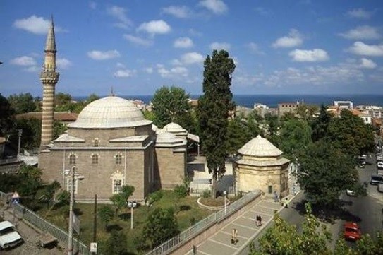
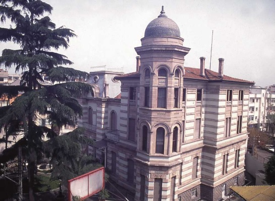
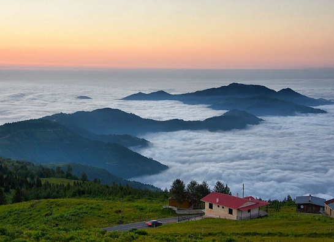
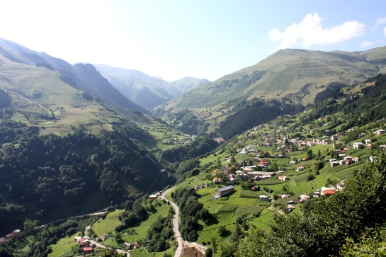

Sümela Manastırı

Ayasofya Müzesi

Boztepe

Uzungöl

Atatürk Köşkü

Ortahisar Camii

Gülbahar Hatun Türbesi

Trabzon Müzesi

Sultan Murat Yaylası

Trabzon Kalesi

Santa Harabeleri

Maçka
Nüfus : 808.974
İdari Birimler : 18 İlçe
Plaka Kodu : 61
Trabzon Fatihin fethettiği Yavuz'un hükmettiği Kanuninin dünyaya geldiği tarihin akışını değiştiren şehirdir Trabzon. Günümüzde Karadeniz Bölgesi'nin Samsun'dan sonra ikinci büyük kentidir. Trabzon, 12 Kasım 2012 tarihinde kabul edilen büyükşehir yasa tasarısı ile büyükşehir belediyesi olmuş ve merkez ilçe kaldırılarak Ortahisar ilçesi kurulmuştur. Trabzon "şehzadeler şehri" olarak anılır. Tarih boyunca da gerek ticaret yolu, gerekse de liman şehri olması dolayısıyla önemli bir kent olmuş. Uzun yıllar göç veren Trabzon’un nüfusu, bugün 800 bini geçmiştir. Göç vermesindeki en önemli etken hiç şüphesiz Karadeniz’in geçit vermeyen dağları. Şehir batı ve doğu iki yakaya doğru büyümesini sürdürüyor. Deniz ve doğa turizmi açısından son yıllarda ünü artan kentte, özellikle yayla turizminde de büyük gelişme gözlemleniyor. Trabzon’un Vakfıkebir, Maçka, Araklı, Of, Akçaabat, Beşikdüzü, Çarşıbaşı, Arsin, Yomra başta olmak üzere 18 tane ilçesi vardır. Kentin etrafı yeşilliklerle çevrili olsa da, kent merkezi genel olarak kalabalık ve biraz da sıkışıktır. Ancak yaylaları, Uzungöl, Çaykara gibi doğal güzelliklerin yer aldığı beldeleri Trabzon’a gezecekleri keyifli anlar yaşatır.